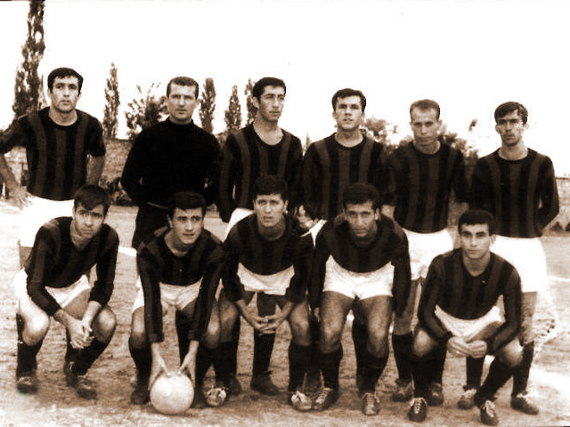

| Tam Ad | Denizlispor Kulübü |
|---|---|
| Takma Ad | Horozlar |
| Renkler | Yeşil - Siyah |
| Kuruluş | Denizli İdman Yurdu (1922-1936) Denizlispor (1936-1966) Denizlispor (1966) |
| Stadyum | Denizli Atatürk Stadyumu |
| Başkan | Ali Çetin |
| Teknik Direktör | Ali Tandoğan |
| Lig | 1. Lig |
| 2020-21 | Süper Lig (düştü) |
| Resmi Site | denizlispor.org.tr |
Denizlispor
Denizlispor, veya sponsorluk anlaşması gereğince Yukatel Denizlispor, 1966 yılı Mayıs ayında Denizli ilinde kurulmuş olan, özellikle Profesyonel Futbol Takımı ile tanınan spor kulübüdür. Renkleri yeşil-siyah olan kulübün futbol takımı, maçlarını 18.745 kişilik Denizli Atatürk Stadyumu'nda oynamaktadır. Kulüp Futbol, Voleybol, Basketbol, Masa tenisi, Yüzme, Satranç, Buz Pateni ve Jimnastik branşlarında faaliyet göstermektedir. Kulübün Profesyonel Futbol Takımı, Süper Lig tarihinde en fazla puan toplayan takımlar arasında en iyi 18. takım konumundadır. Avrupa kupalarındaki en büyük başarısına ise 2002-03 sezonunda UEFA Kupası'nda 4. tura kalarak ulaşmıştır.
Tarihçe
1959 öncesi
Denizli ilinde, geleneksel güreşler hariç Cumhuriyet devrine kadar diğer spor hareketleri mevcut değildi. Denizli merkezinde bugünkü anlamı ile spor hareketi ve kulüp teşkili 1922 yılında başlamıştır. Bu suretle ele alınan spor çalışmaları, ilk resmî spor teşekkülü olarak Denizli İdman Yurdu adıyla Denizli merkezinde 1922 yılında kurulmuştur. İdman yurdunun ilk kurucuları ve yönetim kurulu, veteriner Kenan Bey, eczacı Kadri Özbaş, öğretmen Şemsi Bey, idare memuru Mustafa Naili Bey, öğretmen Hamdi Beyden teşekkül etmişti.
17 Eylül 1922 yılında yukarıda adları geçen müteşebbisler tarafından Çaybaşındaki eski Türkocağı binasında kurulan İdman Yurdu bu suretle Denizlispor tarihinin ilki ve temeli olmuştur. Kulüp kuruluşundan bir hafta sonra da ilk futbol maçını yapmıştır. Futbol topuda ilk olarak bu tarihte bu tarihte şehre girmiştir. Futbol oynayan ilk oyuncular: Kadir Abanoğlu, Kadri Özbaş, oğlu Rıza Bey, Fehmi Bey, Vasfi Bozkaya, Öğretmen Nevzat Bey’dir[2]. Henüz futbol sahası olmadığından gelişigüzel bir sahada 1 Ekim 1922'de futbol çalışmalarına başlanmış, saha kaptanlığını da Enver Bey yapmıştır. Kale direği yerine de birer ceket koymak suretiyle işaretlenmiştir. 1930 yılında İdman Yurdu geliştirilmiş, aynı yıl ikinci bir kulüp olarak Menderes Gençlik kurularak, karşılıklı iki kulüp çalışmalara başlamışlardır. Sonradan 1936 yılında bu iki kulüp birleşerek Denizlispor adı altında faaliyete geçmiştir.
Profesyonel takımın kuruluşu
1966 yılına gelindiğinde futbol kulüplerinin sayısında büyük bir artış olmuş ve Denizli'de profesyonel liglerde mücadele edecek bir takıma ihtiyaç duyulmaya başlanmıştır. 26 Mayıs 1966 tarihinde gerçekleşen genel kurul toplantısında Çelik Yeşilspor ve Pamukkale Gençlik kulüplerinin Çaybaşı semtinde kurulu olan bu Denizlispor Kulübü'ne katılmasıyla profesyonel futbol takımının teşkili ön görülüp karar altına alınmıştır. Genel Kurul'un bu kararı Futbol Federasyonu Başkanlığına bildirilmiş, Türkiye Futbol Federasyonu ise bu üç kulübün birleşimiyle profesyonel futbol takımı teşkilini Denizlispor Gençlik Kulübü adı altında onaylayıp, 14 Temmuz 1966 tarihinde Denizlispor'un Türkiye 2. Ligi'ne katılmasını uygun görmüştür.
Üç kulübün bu birleşiminde, Denizlispor'da bir dönem basketbol da oynamış sportmen, Denizli Valisi Nezih Okuş'un da büyük payı bulunmuştur. Denizli halkının gözünde Türkiye Ligleri'nde mücadele etme isteğinin artması Denizlispor'un yaratılmasını zorunlu hale getirmiştir. Vali Nezih Okuş, Denizli'nin ileri gelenlerini harekete geçirerek ilk adımı atmış ve Okuş'un bu girişiminde dönemin Türkiye Futbol Federasyonu Başkanı Orhan Şeref Apak'ın da önemli katkıları bulunmuştur. Yapılan çalışmalar sonunda yeşil ve siyah renkleri alan Denizlispor'un Kurucu Başkanlığına Dr. Samim Gök getirilirken, Kurucular Kurulu'nda ise Fuat Özen, Birol Önder, İlhami Süner, Şükrü Sarıoğlu, Atilla Sayıner ve Yakup Ünel yer almıştır.
Yönetim Kurulu'nun oluşturulmasından sonra teknik direktör arayışları başlar. Yakup Ünel, Fuat Özen ve Atilla Sayıner Altan Santepe'ye teklifte bulunmak için İzmir'e giderler. Altan Santepe futbolu yeni bırakmıştır ve Yeni Asır Gazetesi'nde spor yazarlığı yapmaktadır. Denizli'den giden üç yönetici Santepe ile görüşüp kendisine teknik direktörlük önerirler. Görüşmeler sonunda Altan Santepe 30 maddelik şartları olduğunu söyler. Bunların zamana yayılması kabul edilince anlaşma sağlanır.